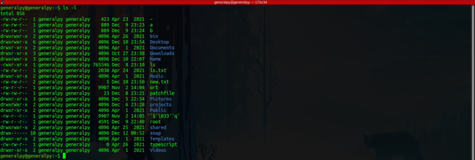

Linux File Permissions determine who can read, write and execute files in a linux system.
It ensures that only authorized users or processes can access the file. It is a very importan feature from information security pov.
There is always a user and a group is assigned with the file. The owner of that file the one who created that file and primary group of that user becomes owner group of that file. These can be changed by using chown and chgrp commands.
There are 3 categories of users to whom permissions are assigned :
1. The file owner
2. The group owner
3. Everyone else(the whole world)
There are 3 types of permissions available for a file :
1. Read file permission(r)
2. Write file permission(w)
3. Execute file permission(x)
To get file permissions simply user ls -l.

In first column of ls output, first character is used to tell type of file and then 9 characters after that are used to show file permissions.
9 characters are divided into 3 parts in order of user, group and everyone else.
The 3 characters in each user category follow the order read, write and execute. Dash is used where that permission is denied. For example in above image for root file, owner has read and write permissions and group owner and others have only read permission.
These permissions are not applicable to root.